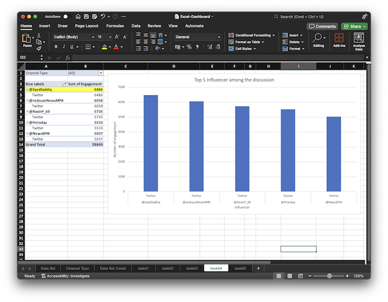

Projects
Bolt-FRAS Face Recognition Attendance System
- Skills Used: Machine Learning, Software Development, Computer Vision, Project Management, Software Development Life Cycle, Front-end Development, Back-end Development, Database Management, Version Control, Dashboard Development
- Technologies Used: Python, Django, TensorFlow, OpenCV, SQLite, HTML, CSS, JavaScript, jQuery, Bootstrap5, Git
- Description: This project is about the blend of machine learning with software, as a system is taking attendance using computer vision and face recognition modal.
- Contribution: Use Django for back-end development and TensorFlow train the machine learning modal with 95% recognition success rate. This project emphasize my ability to manage the whole project using Software Development Life Cycle – Agile Model, ability to manage database design and database modelling using SQL.
<- Swipe to view more ->


Java Business Intelligence Dashboard Software
- Skills Used: Dashboard Development, Software Development, Business Intelligence, Version Control
- Technologies Used: Java, JavaFX, CSS, Git
- Description: This project is a BI Dashboard software developed for business to extract data from JSON file and display them in dashboard form to provide business insights.
- Contribution: This project is developed purely using Java, CSS to style the buttons, table, graph, etc. Moreover, my familiarity toward version control, Git also important as part of this project.
<- Swipe to view more ->

MemesHub
- Skills Used: Website Development, Front-end Development, Back-end Development, Database Management, Version Control
- Technologies Used: XAMPP, PHP, MySQL, HTML, CSS, JavaScript, jQuery, Bootstrap5, Git
- Description: MemesHub is a social media website for user to share memes and get feedback or reactions from the others.
- Contribution: This project emphasize my ability to work with XAMPP as server, PHP for back-end development MySQL for database management. Moreover, my familiarity toward version control, Git also important as part of this project.
<- Swipe to view more ->


Dashboard Development Tableau
- Skills Used: Data Analytic, Data Transformation, Data Cleaning, Data Manipulation, Dashboard Development, Database Management
- Technologies Used: SQL, Tablea, SQL Server Management Studio, Azure Data Studio
- Description: Developed a Tableau dashboard for a Coffe shop. Geared towards marketing and inventory teams focusing on monthly promotions and following inventory plan.
- Contribution: Conducted analysis in SQL to surface insights on sales trends for a shop sales dataset from Kaggle containing 149k transaction records. Worked independently to clean and analyse data in SQL and built performance dashboard in Tableau to visualize trends related to revenue, product category, and sales.
<- Swipe to view more ->
Dashboard Development Power BI
- Skills Used: Data Analytic, Data Transformation, Data Cleaning, Data Manipulation, Dashboard Development
- Technologies Used: Power BI, Power Query, Microsoft Excel
- Description: Developed a Power BI dashboard for a grocery store. The source of raw data is from Microsoft Excel containing 180K rows of raw data.
- Contribution: Perform data cleaning and data manipulation using Power Query Editor, develop a sales insight dashboard to visualize the trends related to products and suppliers for inventory management team focusing on identify the low-performing products and eliminate them from inventory.
<- Swipe to view more ->
Microsoft Excel Dashboard Development
- Skills Used: Data Analytic, Data Transformation, Data Cleaning, Data Manipulation, Dashboard Development
- Technologies Used: Microsoft Excel
- Description: Developed a dashboard providing insight for consulting team to make digital marketing and branding decision.
- Contribution: Independently clean and manipulate the data using Microsoft Excel on a 20K rows of Social Media Conversation dataset. Built a business level dashboard using pivot table, pivot chart and slicers providing information to make right digital marketing and branding decision.
<- Swipe to view more ->

